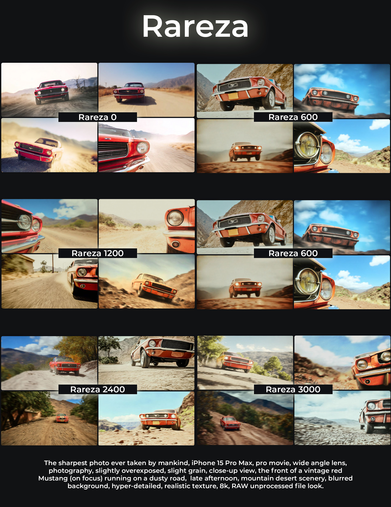
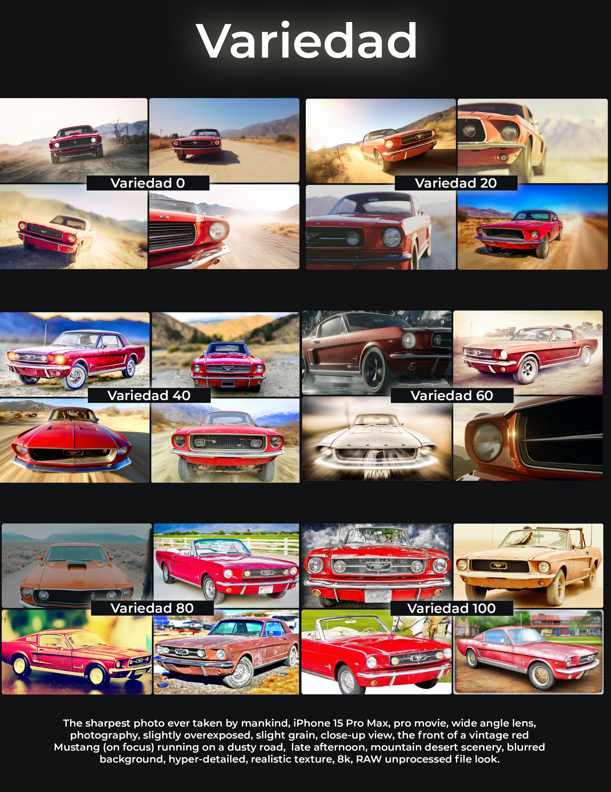

Estilizar funciona como un control deslizante que ajusta la cantidad de creatividad artística aplicada a tu imagen.
Con un nivel bajo de estilización, es como pedir una imagen que se ajuste a tus indicaciones al pie de la letra:
Midjourney se ciñe a los hechos sin añadir demasiados elementos.

Rareza es una herramienta que le da un toque especial a tus imágenes añadiendo algo diferente o extraño
A mayor número mayor riesgo creativo para la IA
Variaciones es una herramienta que como dice su nombre te presenta el nivel de variedad entre los resultados.
A mayor número la variación entre las opciones es más diversa.
